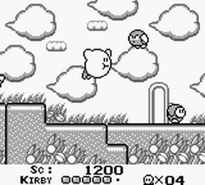

Polyvalence et Capacités Uniques
Kirby, c'est un vrai caméléon dans le monde des jeux vidéo. Ce qui le rend top, c'est sa façon d'avaler ses ennemis pour choper leurs pouvoirs. Ça te file une tonne d'options pour jouer, comme avoir un sac à malices rempli de techniques différentes ! C'est ça qui garde le jeu toujours intéressant, tu découvres tout le temps de nouveaux trucs pour botter les fesses des méchants.
Évolution dans les Jeux Vidéo
Ce qui est cool avec Kirby, c'est comment il reste dans le coup. Il évolue avec le temps, passant des jeux classiques à des trucs plus modernes. C'est comme s'il s'adaptait à tous les goûts ! Cette évolution, c'est la garantie qu'il y aura toujours un jeu Kirby qui te bottera, que tu sois fan des vieux classiques ou des nouvelles tendances du gaming. Kirby reste cool en changeant les règles et en restant dans la course des jeux vidéo.

Charme Irrésistible et Vibes Positives
Sérieux, regarde cette petite bouille mignonne de Kirby ! C'est juste impossible de ne pas craquer. Mais c'est pas juste son look, c'est aussi son attitude. Kirby, c'est le gars toujours de bonne humeur, il carbure à l'amitié et à la justice. Jouer à ses jeux, c'est comme entrer dans un monde où tout respire la bonne humeur.

{kind=link}
{kind=link}
{kind=link}
{kind=link}
{kind=link}